3下學期 第 2 章
電與磁的應用
答案卡
點題號可跳到該題詳解。開啟「遮住答案」後，點一下塗卡格才會顯示答案。
詳解
鐵釘的E 端會吸引指南針的S 端，表示E 端為N 極；而由B、C 端的磁力線互相排斥可推論B、C 端為S 極。故選（D）。
看題目
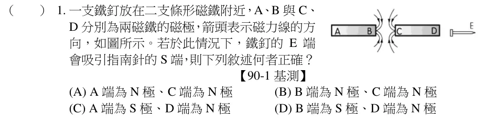
欲使感應電流增大，除了增加線圈單位長度的圈數，亦可增大磁棒與線圈的相對速率。但(C)相對速率不變時，感應電流大小不變，若僅運動方向改變，則僅會影響感應電流流向。故選（C）。
看題目
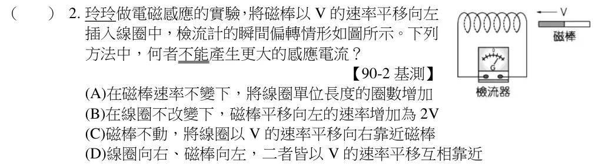
甲羅盤磁針的N 極向東偏，乙羅盤磁針的N 極不偏轉，丙羅盤磁針的N 極向西偏轉。故選（A）。
看題目
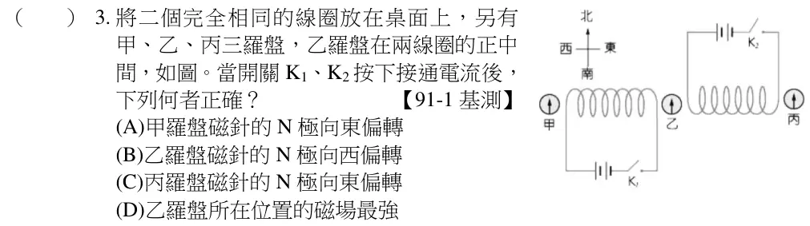
利用圓形線圈的右手定則，四指彎曲繞轉代表電流方向，大拇指的方向即代表線圈內磁場方向，故甲磁場方向向右，圈外磁場方向與圈內磁場方向相反，故乙磁場方向向左。故選（C）。
看題目
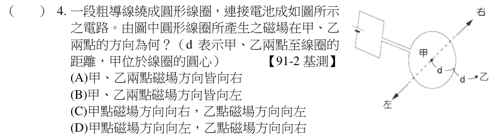
(A)依圓形線圈的安培右手定則，甲磁場方向向右；(B)開關S 接通一段時間後，電流大小不變，故無感應電流產生，檢流計指針不偏轉；
(C)開關S 切斷的瞬間，電流改變，乙線圈會產生感應電流，檢流計指針會偏轉；(D)開關S 切斷後，無電流，線圈甲的電流將消失。故選（A）。
看題目
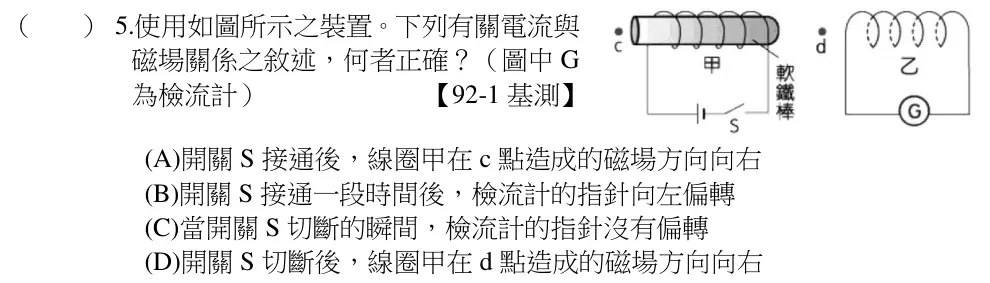
線圈內部的磁場大小，與線圈電流上的大小及單位長度的線圈匝數成正比。故選（C）。
看題目
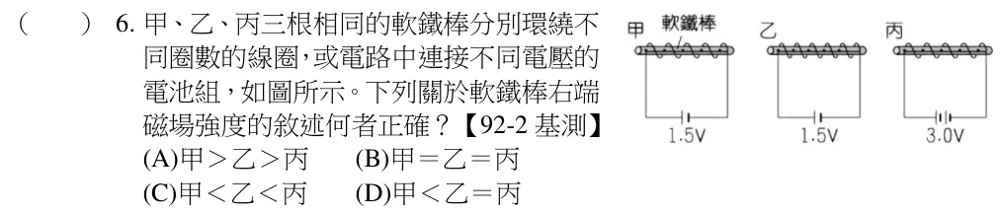
磁性物質周圍必有磁力線存在。故選（D）。
看題目
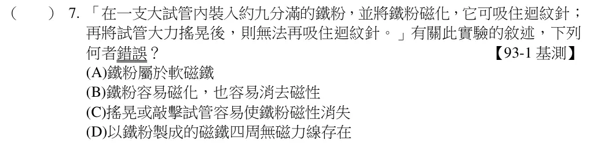
要使θ 角度變大，則需使螺線形線圈的磁場變大，但使電池反向相接，僅是磁場方向改變無法使磁場增大。故選（B）。
看題目
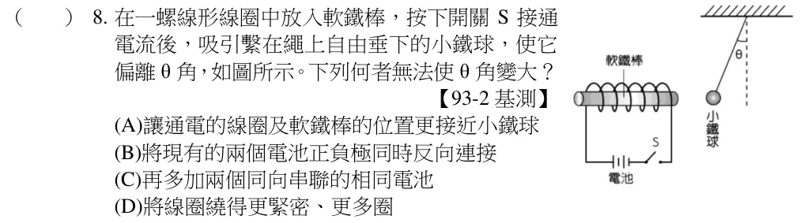
會對帶電粒子產生力量使其移動的為地球磁場。故選（A）。
看題目
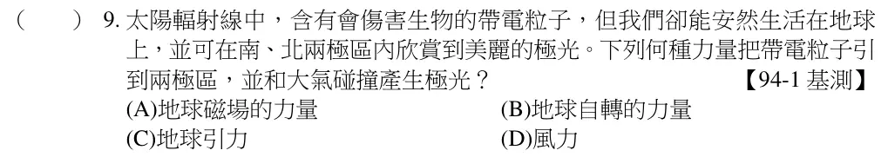
利用右手定則可以判斷出甲位置的磁場方向向東。故選（C）。
看題目
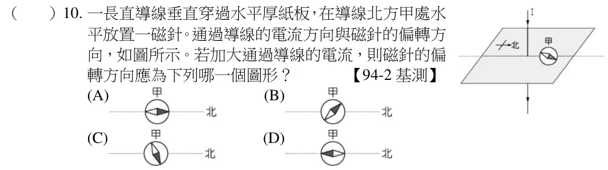
(A)電路中電源必須是直流電源，以保持電流方向不變；(B)線圈上方應為N 極，依安培右手定則，a 點應為電源正極；(D)電阻值調大，則電流變小，磁場強度亦會減小。故選（C）。
看題目
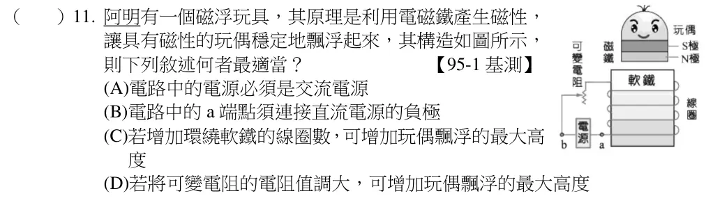
(A)手電筒是利用磁場改變產生感應電流，再轉換成光能；(C)線圈產生交流電；(D)發電過程是利用磁場改變產生電流。故選（B）。
看題目
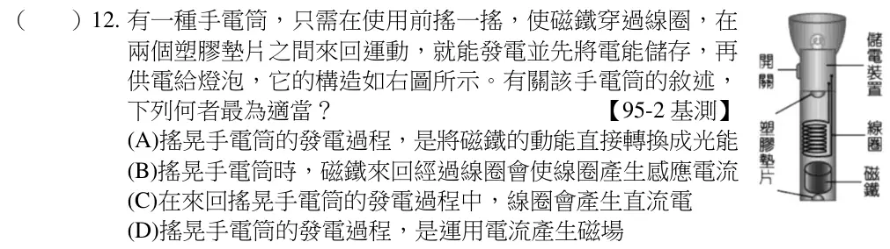
利用安培右手定則可以判斷出a 處的磁場方向向東。故選（A）。
看題目
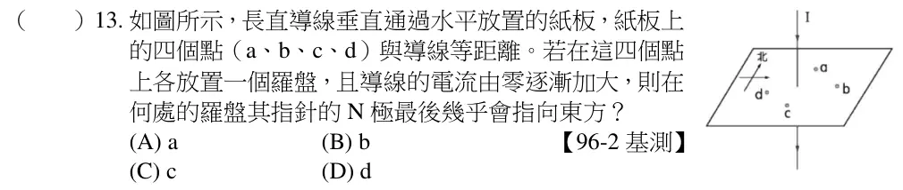
根據安培右手定則，乙、丁處電流產生之磁場方向與地磁相同，故不偏轉，甲、丙均向西偏轉。故選（C）。
看題目
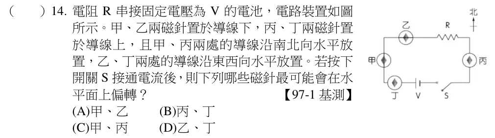
依安培定律，磁場強度與距離成反比，A 距導線較近，故偏轉較大。故選（A）。
看題目
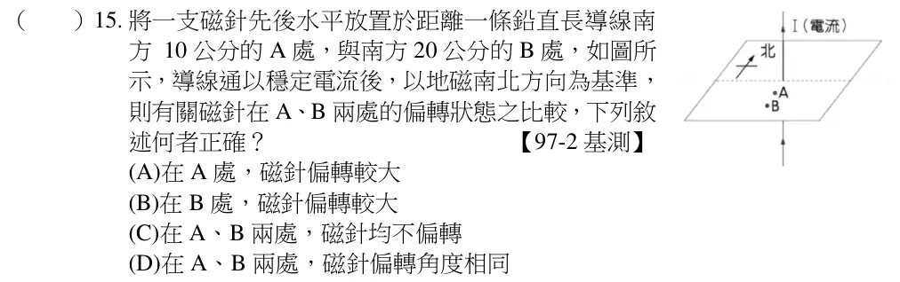
根據安培右手定則，判斷螺線管之磁場在甲的右端與乙的左端均為N極，同極相斥，所以套筒會左右分開。故選（B）。
看題目
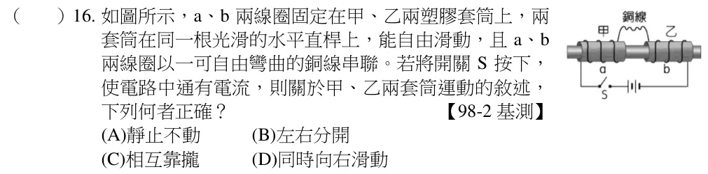
根據安培右手定則，大拇指為電流方向，四指環繞之切線方向，則為磁場方向，故上下導線之電流，對O 點所造成的磁場方向皆向北。故選(D)。
看題目
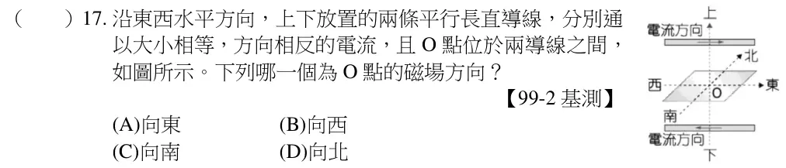
磁場必須發生變化，才會發生感應電流。磁棒「靜置」於甲、乙、丙哪一點，與線圈間皆無相對速度之變化，所以無法產生感應電流。故選(D)。
看題目
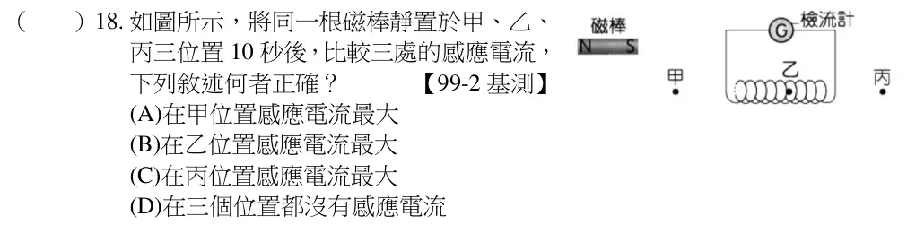
(A)、(B)磁力線愈密、磁場愈強，愈疏則磁場愈弱。(C)、(D)鐵粉形成的圖形僅能判斷出磁力線分布的情形，磁針N 極的指向才能判斷出磁場的方。故選(D)。
看題目
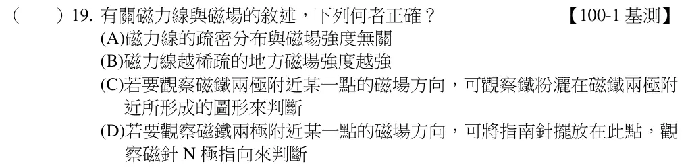
根據安培右手定則，因通過乙紙板之電流向上，故Y 磁針之N 極會向西方偏轉，又通過甲紙板之電流向下，X 磁針之N 極則會向東方偏轉。故選(C)。
看題目
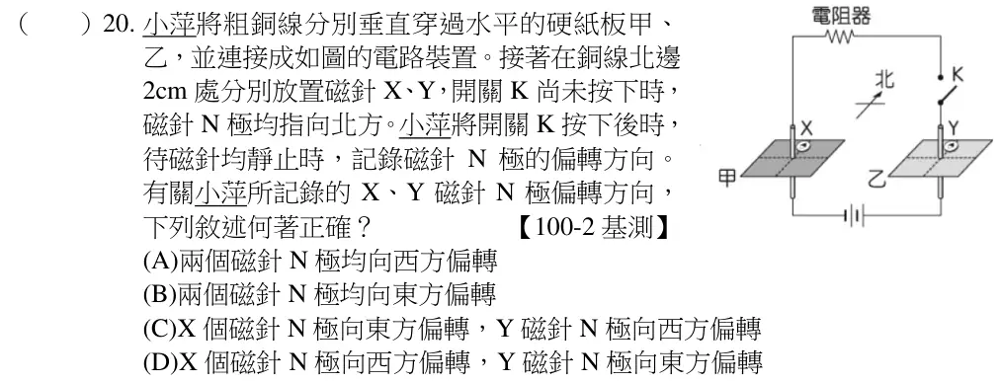
載流長直導線附近形成的磁場可顯示出鐵粉為封閉的同心圓。故選
(A)。
看題目
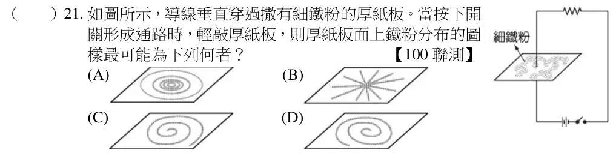
甲的右端為N 極，乙的左端為N 極，所以甲、乙相斥。丙的左端為N 極，乙的右端為S 極，所以乙、丙相吸。故選(C)。
看題目
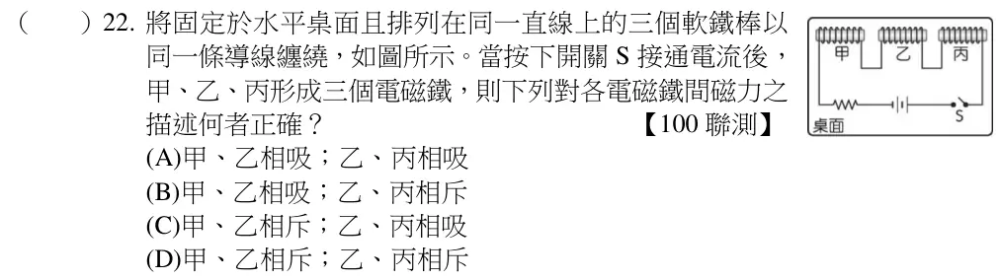
由於磁鐵的N、S 極，會成對出現，甲段的截斷面會產生N 極，乙段的截斷面會產生S 極。因此D 中磁針的S 極和乙段的截斷面會互相排斥。故選(D)。
看題目
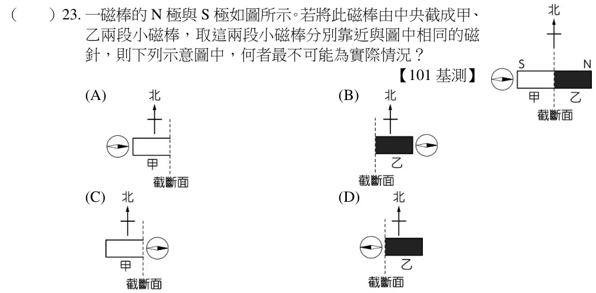
由右手開掌定則，可知A 受力向東；B 受力向西；C 受力向南；D受力向北。故選(A)。
看題目
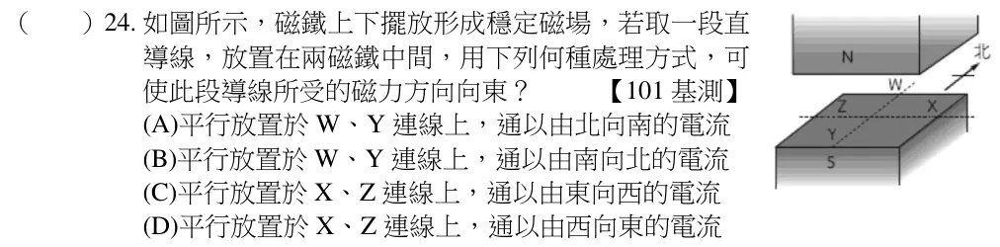
N 極所指的方向為磁力線的切線方向，而磁力線皆從磁棒的N 極出發，由圖可看出，甲向西、乙向北、丙向西、丁向北。故選（D）。
看題目
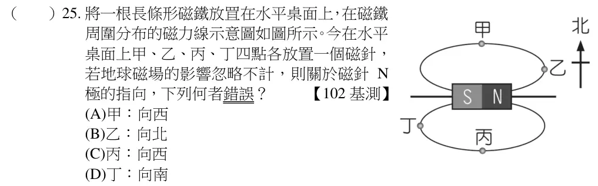
按下開關後，磁鐵會掉落是因軟鐵棒的右端因線圈通入電流後，感應成N 極而排斥磁鐵，使其掉落，根據安培右手定則，可判斷電流應由Q 點經開關K 到P 點。故選（D）。
看題目
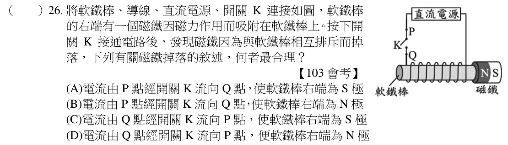
通以向下的電流時，未指向北方的是甲、乙、丁，電流方向向上時，未指向北方的是乙、丙、丁。故選（C）。
看題目
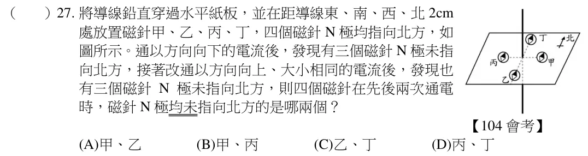
線圈內的磁場必須產生變化才會發生電磁感應的現象。故選(A)。
看題目
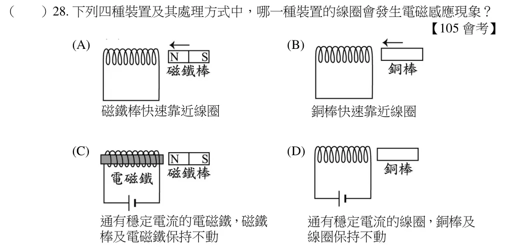
根據右手開掌定則，各銅線受力方向為(A)
銅線甲：向西；(B)銅線乙：向北 (C)銅
線丙：向東；(D)銅線丁：向南。故選(C)。
看題目
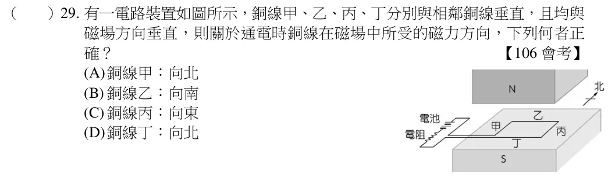
磁力線在磁鐵外部方向為N 極到S 極。故選(A)。
看題目
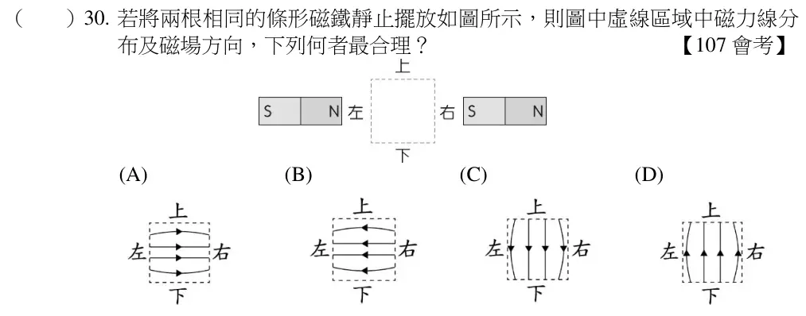
根據安培右手定則，磁針如置於導線上方，N 極應該往西偏，指向西北方，若改置於導線下方，才會偏向東，指向東北方。故選(C)。
看題目
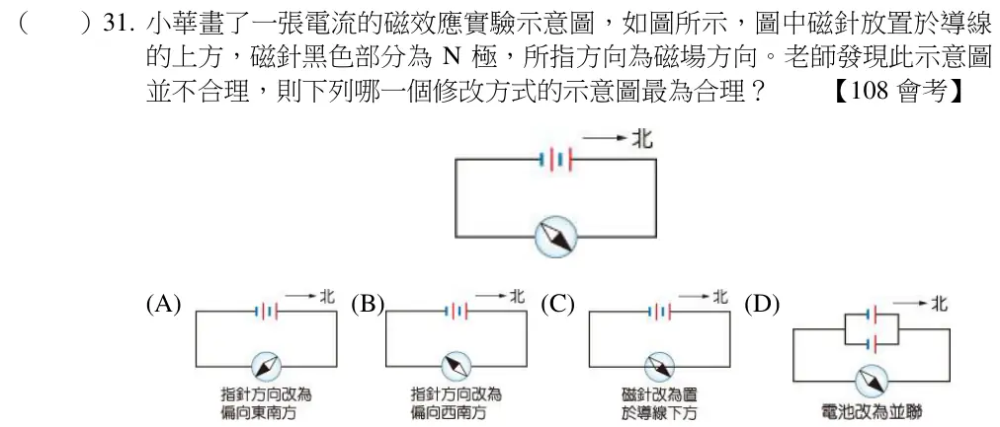
根據安培右手定則，P 點磁場方向垂直出紙面；Q 點磁場方向垂直入紙面，又根據安培定律，P、Q 兩點和電流的垂直距離相同，因此，磁場強度也相同。故選(B)。
看題目
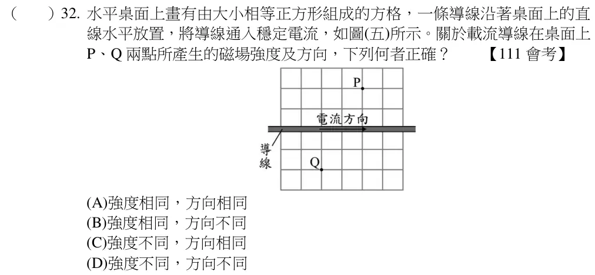
根據右手開掌定則，甲、乙所受磁力均向西。故選(B)。
看題目
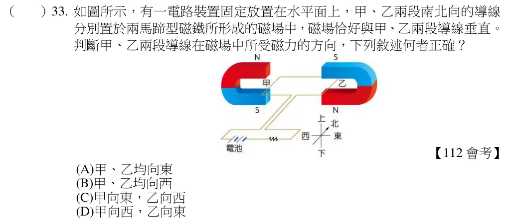
看題目
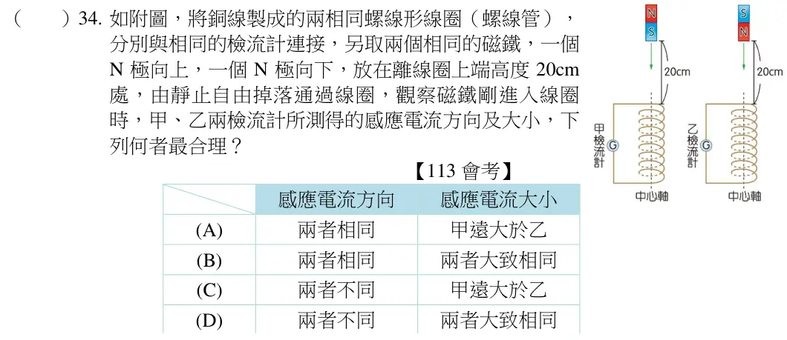
電流向北，依照安培右手定則，甲實驗磁針受到電流磁場的切線向東，於是向東方偏轉，乙實驗磁針受到電流磁場的切線向西，於是向西方偏轉，且由於電壓、電流較甲大，故偏轉角度也較大。故選(A)。
看題目
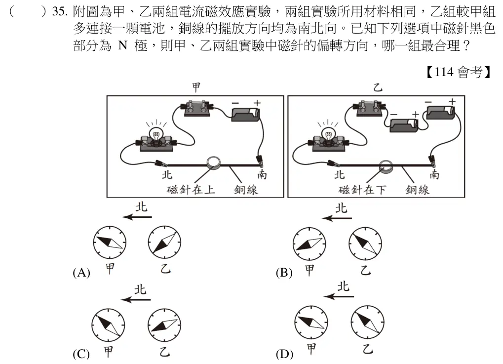